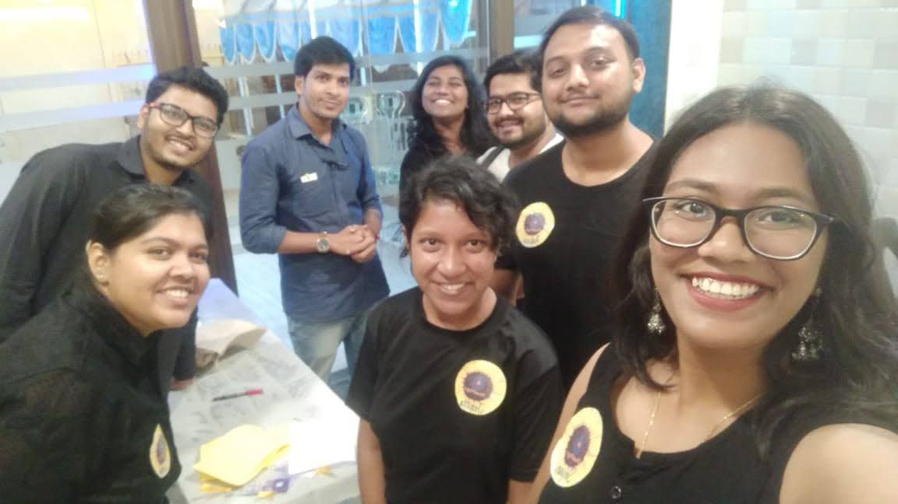

A free mind is a right, not a luxury.
MannMukt means a mind set free. Since 2019 we've worked to make mental health something people can talk about openly, without fear or shame.
Started with one observation
Mental health challenges are far more common than we acknowledge, yet awareness and timely help remain critically low. Most people who struggle never reach out, not because support doesn't exist, but because they don't recognise what they're going through as something that deserves it.
MannMukt was founded in October 2019 to close that gap. What began as small community meet-ups has grown into workshops, listening circles, art-based sessions, campus campaigns and collaborations such as #KaiseHo? with TEDxRambaug.

Make mental health an everyday conversation
To build mental health literacy across communities, campuses and workplaces in India, so that people recognise when they or someone they love needs support, and feel free to ask for it.
A society where no one suffers in silence
A future where caring for the mind is as natural as caring for the body, and where every invisible wound is met with understanding instead of stigma.
Our values
- Safety first
Every space we create is confidential, kind and free of judgement.
- Facilitate, don't preach
We listen more than we lecture. People heal in conversation, not in sermons.
- Grounded in evidence
Our sessions draw on clinical psychology and lived experience in equal measure.
- Together, not alone
Healing is collective. Our volunteers, partners and participants make MannMukt what it is.
"Awareness is the gateway. Everything else follows."
The path to MannMukt began with a simple observation: mental health challenges are far more common than we acknowledge, yet awareness and timely intervention remain critically low. That gap between the scale of the problem and the scale of the response was impossible to ignore.
I pursued an MSc in Clinical Psychology and built experience across clinics, hospitals, rehabilitation centres, NGOs, startups and educational institutions. Each setting taught me the same truth: people suffer longer than they need to, not because help doesn't exist, but because they don't know to look for it.
MannMukt was founded in 2019 to address that gap directly. The work has taken us into schools, offices, community halls, cafes and online spaces. Today, through R4 Therapy, we're extending it into direct clinical care, because understanding mental health is the beginning, and accessing quality care is where transformation happens.
Want to be part of this?
Volunteer, partner, or simply show up. There is room for everyone.